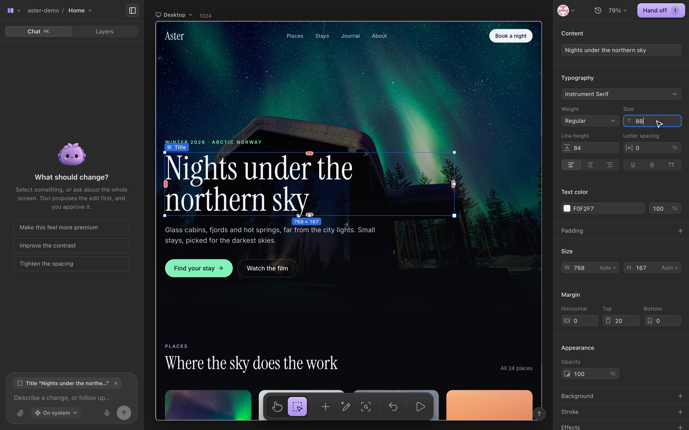
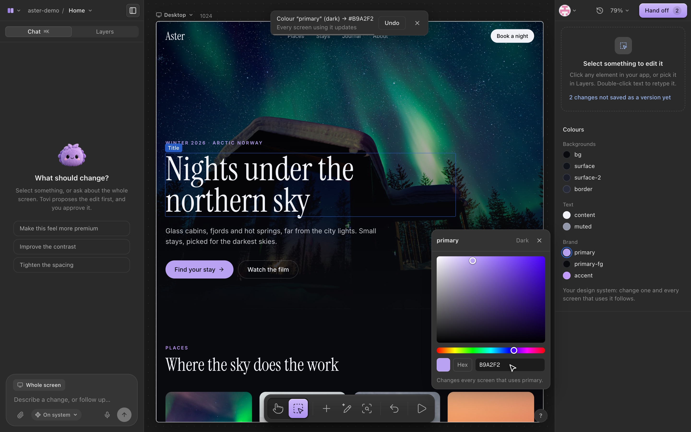
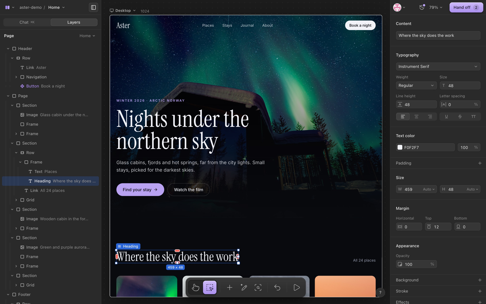
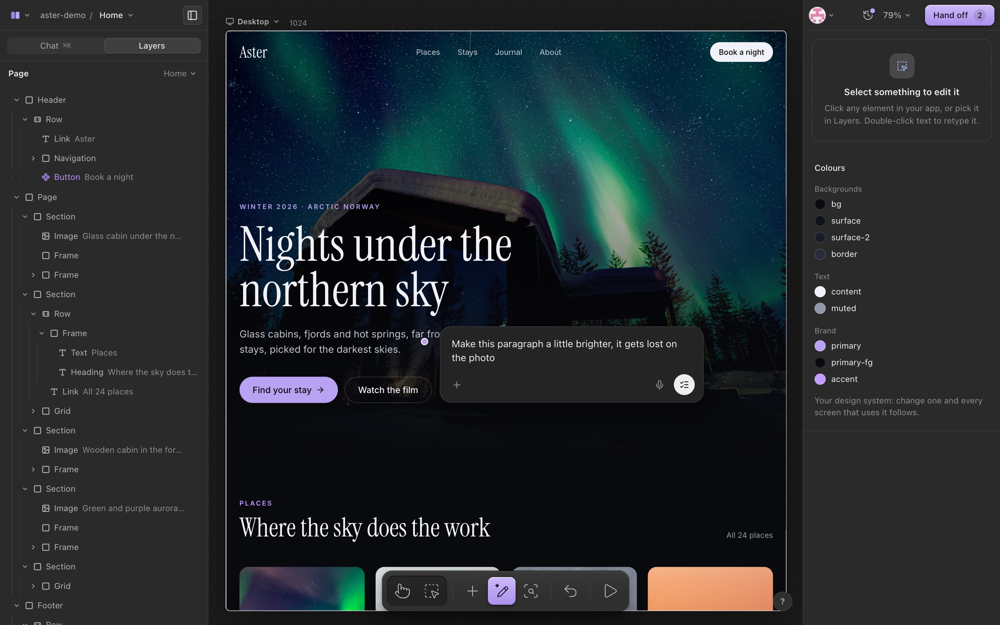
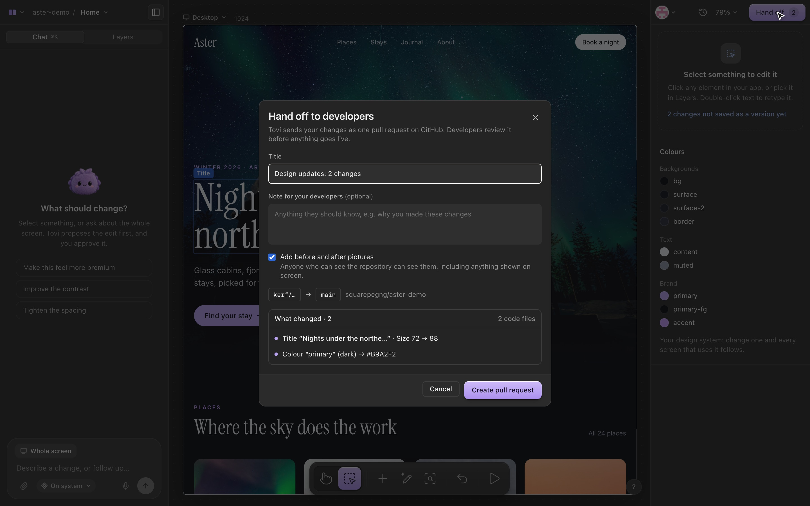

The Problem
Every product team I’ve worked with loses something between design and code. A screen is designed in Figma, rebuilt by a developer, and by the time it ships the spacing is off, the colours have drifted and half the details are gone. Fixing it means screenshots, comments and tickets, then waiting for the next sprint.
AI app builders promised to close that gap, but they replaced hands-on design with typing instructions into a chat. Designers still had no way to fix the real product themselves.
I wanted to answer one question: what if designers could edit the live product directly, with the same feel as Figma, and developers received the changes as clean code?
What Tovi Does
Tovi opens your team’s real, running React app. You click anything on the screen and change it by hand: type, colour, spacing, layout, images. Tovi writes each change into the source code, the way a careful developer would. When you’re done, every change goes to developers as one GitHub pull request, with before and after pictures.
The video at the top is a single take: select a headline, make it bigger, change the brand colour across the whole site, then hand off to developers. No code is touched by hand.

Designing for Designers, Not Developers
The hardest part wasn’t the technology. It was making a code tool feel like a design tool.
Figma’s vocabulary, not CSS. The design panel speaks in gap, padding, hug and fill, not flexbox and margins. Elements are named the way a designer would name them, like “Title” or “Button Book a night”, and every change is written in plain words, like “Size 72 → 88”.
Two modes only. Preview to use the product normally and find problems. Edit to fix them. Going back to Preview saves a version automatically, so there’s nothing to remember.
The design system comes first. When nothing is selected, the panel shows the product’s colours. Change one and every screen that uses it follows, the same way a design system should work.

Structure you can see. A Layers panel shows the real page as a tree with readable names, so you can find and select anything, even elements hidden behind others.

Code a Developer Would Write
If developers don’t trust the output, nothing else matters. So Tovi never does find-and-replace on text. It finds the exact element in the source code that you clicked and changes only its styling classes, and when a style lives somewhere else, like a design token or a shared component, it edits it there and asks whether the change should apply Only here or Everywhere.
Here is the entire code change from the video. Two lines, in the right files, written the way a developer on the team would write them:
- <h1 className="mt-5 max-w-3xl font-display text-7xl leading-[0.95] text-content">+ <h1 className="mt-5 max-w-3xl font-display text-[88px] leading-[0.95] text-content">- --c-primary: 132 240 186; /* #84F0BA */+ --c-primary: 185 162 242; /* #B9A2F2 */AI as a Collaborator, Not a Replacement
Tovi includes AI, but it never takes the craft away. You can ask it to change a selection or a whole screen, or draw a note directly on the screen and let it work through your notes in one go.
I set clear rules for it: it shows its plan before big changes, it stays out of behaviour and data, and every change it makes becomes a version you can undo. The designer stays in charge.

Handing Off to Developers
All changes, across every screen, go into one pull request. Tovi checks that the project still builds, takes before and after pictures of the changed pages, and writes the description in plain language, with the code details folded away for developers.
It only includes Tovi’s own changes, so a developer’s unfinished work in the same file never ends up in the pull request.

Key Decisions
Edit the real product, not a copy: Designers work on the running app with real data, so what they fix is exactly what ships.
Runs on your own computer: Your code never leaves your machine. It also meant no servers to pay for before the product earns money.
Guardrails for non-designers: Values snap to the design scale and low contrast is flagged, so founders without design training can make changes safely.
One brand colour, used sparingly: Lavender, taken from Tovi’s mascot, marks only the main action and the active tool. Blue means “what you’re touching”, just like Figma.
Where It Is Now
Tovi works end to end. I’ve used it to open real GitHub projects, edit them by hand and with AI, and hand off a pull request, with pictures, in about 25 seconds. It supports React apps built with Vite or Next.js and Tailwind, and is backed by 86 automated tests. It’s now being prepared for a private beta.
Building Tovi meant designing and engineering at the same time, working in code alongside AI coding tools. It taught me that the best design tools don’t hide the product, they let you touch it.